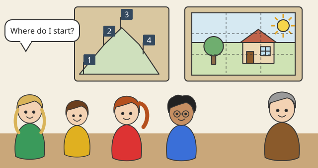
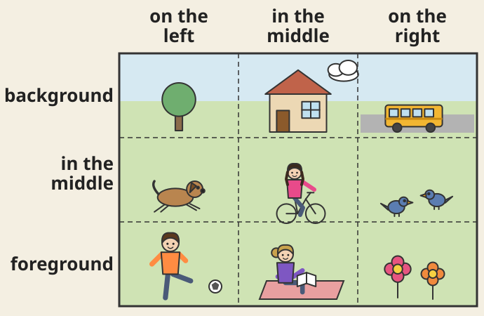

Ein Bild beschreiben: wo ist was?
Mit einem KI-Tutor lernen
Ein KI-Tutor erklärt dir diese Seite und hilft dir bei den Aufgaben. Wähl deinen Assistenten:
Mit Claude öffnen Mit ChatGPT öffnen Mit Mistral Vibe öffnen
Du nutzt dein eigenes Konto beim Anbieter. Der Assistent ist kein Angebot von lernapps.net: lernapps liefert nur Inhalte und Aufgaben. Die Wahl gilt für alle Seiten, nur auf diesem Gerät.
Ein Bild hängt in der Geschichtenecke

Von links: Sophie (Zöpfe), Peter (gelbe Jacke), Ellie (roter Pferdeschwanz), Amir (Brille) und Mr Hill (graue Haare). Neben dem Geschichtenberg hängt das Bild der Klasse.
Quelle: eigene Zeichnung. Lizenz: CC-BY-4.0.Es ist Mittwoch in der Geschichtenwoche. Seit heute früh hängt in der Geschichtenecke ein Bild der Klasse. Mr Hill sagt: „Describe the picture.“ Das ist nicht leicht, denn es gibt viel zu sehen. Mr Hill fragt zuerst nach dem Bild an der Wand: „Where is the tree?“
Aufgabe
Lösung
The tree is next to it richtige Antwort
Next to sagt, wo etwas ist.
The tree is falling down
Das sagt, was gerade passiert, nicht wo.
There are two trees
Das sagt, wie viele es gibt, nicht wo.
Auf where antwortest du mit einem Ort.
Das kannst du danach: Du sagst, wo in einem Bild etwas ist, und beschreibst, was da ist und was gerade passiert.
Diese Wörter sind neu auf dem Klassenzimmer-Poster.
| Wort | Bedeutung |
|---|---|
| foreground | Vordergrund |
| background | Hintergrund |
| sandcastle | Sandburg |
| kite | Drachen |
| umbrella | Schirm (Sonnenschirm oder Regenschirm) |
Das Raster zeigt jeden Platz
Mr Hill legt über das Bild ein Raster mit drei Reihen und drei Spalten. So hat jeder Platz einen Namen.

Das Bild vom Park mit Raster. Die Reihen heißen background, in the middle und foreground, die Spalten on the left, in the middle und on the right.
Quelle: eigene Zeichnung. Lizenz: CC-BY-4.0.So beschreibt Amir das Bild: „In the background on the left there is a big tree.“ „In the middle of the picture a girl is riding a bike.“ „In the foreground on the left a boy is playing with a ball.“ „In the middle on the right there are two birds.“
Merke
Sage zuerst, wo etwas ist, und dann, was da ist oder was passiert. Bei den Reihen steht in (in the foreground, in the middle, in the background). Bei den Spalten steht on, wenn es links oder rechts ist (on the left, on the right), die Mitte heißt in the middle. Das Feld ganz in der Mitte heißt in the middle of the picture. Was da ist, sagst du mit there is oder there are. Was gerade passiert, sagst du mit is oder are und dem Verb mit -ing. At steht bei Orten wie at school. Du beschreibst im present, nicht im simple past.
Lies das Raster und beschreibe das Strandbild
Aufgabe
Lösung
Richtige Antwort: the sun – in the background on the left; the umbrella – in the middle on the left; the kite – in the middle of the picture; the ice cream – in the middle on the right
Lies erst die Reihe, dann die Spalte.
Aufgabe
Schreibe das fehlende Wort oder die fehlenden Wörter. Sieh dir das Strandbild an.
Das Strandbild mit Raster.
Quelle: eigene Zeichnung. Lizenz: CC-BY-4.0.Tipp
In steht bei der Reihe, on bei der Spalte.
- Im Hintergrund rechts ist ein Boot. → … the background … the right … a boat.
- Der Mann schläft unter einem Sonnenschirm. → A man is … … an umbrella.
- Im Vordergrund sind zwei Kinder. → In the foreground … two children.
Lösung
- In the background on the right there is a boat.
- A man is sleeping under an umbrella.
- In the foreground there are two children.
Aufgabe
Schreibe einen Satz zum Strandbild. Der Hinweis sagt, was du brauchst.
Das Strandbild mit Raster.
Quelle: eigene Zeichnung. Lizenz: CC-BY-4.0.- foreground · two children · build · sandcastle
- on the right · girl · eat · ice cream
- background · left · there is · sun
Lösung
- In the foreground two children are building a sandcastle. (auch richtig: In the foreground in the middle two children are building a sandcastle.)
- In the middle on the right a girl is eating an ice cream. (auch richtig: In the middle on the right a girl is eating ice cream.; On the right a girl is eating an ice cream.; On the right a girl is eating ice cream.)
- In the background on the left there is a big sun. (auch richtig: In the background on the left there is a bright sun.; In the background on the left there is a yellow sun.; In the background on the left there is a sun.; In the background on the left there's a big sun.; In the background on the left there's a bright sun.; In the background on the left there's a yellow sun.; In the background on the left there's a sun.)
Aufgabe
Hör zu und schreibe, was du hörst.
- KI
- KI
- KI
Lösung
- There are two cows in the background.
- On the right a woman is walking slowly.
- A little cat is sleeping under the table.
Selbst sagen und ein Bild beschreiben
Aufgabe
Hör zu, sprich nach und nimm dich auf. Vergleiche dann mit dem Original.
Tipp
Hör zu. Sprich dann langsam nach.
- What can you see in the foreground?KI
- What is in the background?KI
- What are the children doing?KI
Zum Aufnehmen braucht diese Aufgabe JavaScript. Die Beispiele kannst du auch ohne anhören.
Lösung
- What can you see in the foreground?
- What is in the background?
- What are the children doing?
Offene Aufgabe
Stell dir vor, du stehst in der Tür eures Klassenzimmers. Beschreibe in vier Sätzen, was du siehst und wo es ist.
Tipp
Die App bewertet nicht. Prüfe anhand der Punkte.
Eine gute Antwort enthält:
Lösung
In the foreground there are two tables. On the left a girl is reading a book. In the middle of the room Mr Hill is talking to a boy. In the background on the right there is a big window.
Wie es weitergeht
Danach hängt Mr Hill vier Bilder nebeneinander auf. Sie erzählen zusammen eine kleine Geschichte. Auf der nächsten Seite schreibst du sie auf.